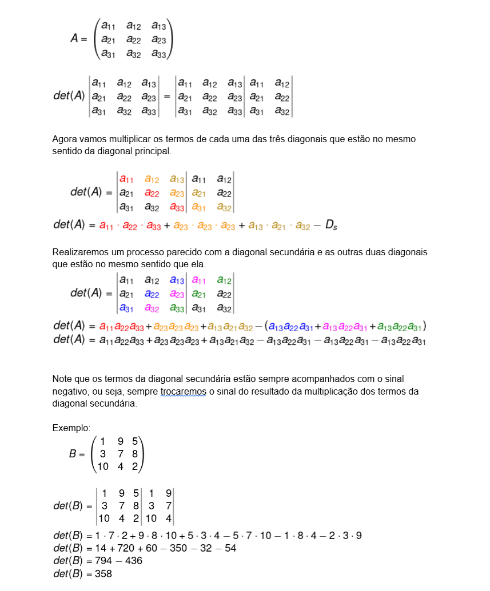
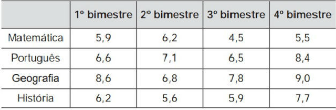
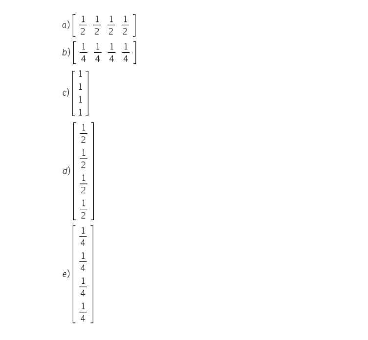

πclass — o principal pilar do seu aprendizado


Determinantes são números que conseguem compactar as informações de uma matriz e são muito usados para a resolução de sistemas lineares e em geometria analítica. É importante saber que eles sempre estão associados a matrizes quadradas!
A representação do determinante é feita com dois riscos paralelos:
|12|
|50|
Vamos ver como calcular o determinante conforme a ordem da matriz aumenta.
Uma matriz é conhecida como de ordem 1 quando possui exatamente uma linha e uma coluna. Quando isso ocorre, a matriz possui um único elemento, o a11. Nesse caso o determinante da matriz coincide com esse seu único termo.
A = (a11)
det(A) = | a11 | = a11
Exemplo:A = [2]
det(A) = |2| = 2
A matriz quadrada 2x2, conhecida também como matriz de ordem 2, possui quatro elementos, nesse caso, para calcular o determinante, é necessário conhecermos o que é a diagonal principal e a diagonal secundária.
Para calcular o determinante de uma matriz de ordem 2, calculamos a diferença entre o produto dos termos da diagonal principal e os termos da diagonal secundária. Utilizando o exemplo algébrico que construímos, o det(A) será:

A matriz de ordem três é mais trabalhosa para obter-se o determinante do que as anteriores, na verdade, quanto maior a ordem de uma matriz, mais difícil será esse trabalho. Nela é necessário utilizar o que conhecemos como regra de Sarrus.
A regra de Sarrus é um método para calcular-se determinantes de matrizes de ordem 3. É necessário seguir alguns passos, sendo o primeiro duplicar as duas primeiras colunas no final da matriz, conforme o exemplo a seguir.
1. (Enem - 2012) Um aluno registrou as notas bimestrais de algumas de suas disciplinas numa tabela. Ele observou que as entradas numéricas da tabela formavam uma matriz 4x4, e que poderia calcular as médias anuais dessas disciplinas usando produto de matrizes. Todas as provas possuíam o mesmo peso, e a tabela que ele conseguiu é mostrada a seguir
Para obter essas médias, ele multiplicou a matriz obtida a partir da tabela por
A média aritmética é calculada somando-se todos os valores e dividindo-se pelo número de valores.
Assim, o aluno deverá somar as notas dos 4 bimestres e dividir o resultado por 4 ou multiplicar cada nota por 1/4 e somar todos os resultados.
Usando matrizes, podemos chegar ao mesmo resultado fazendo uma multiplicação de matriz.
Entretanto, devemos lembrar que só é possível multiplicar duas matrizes quando o número de colunas de uma é igual ao número de linhas da outra.
Como a matriz das notas têm 4 colunas, a matriz que iremos multiplicar deverá ter 4 linhas.